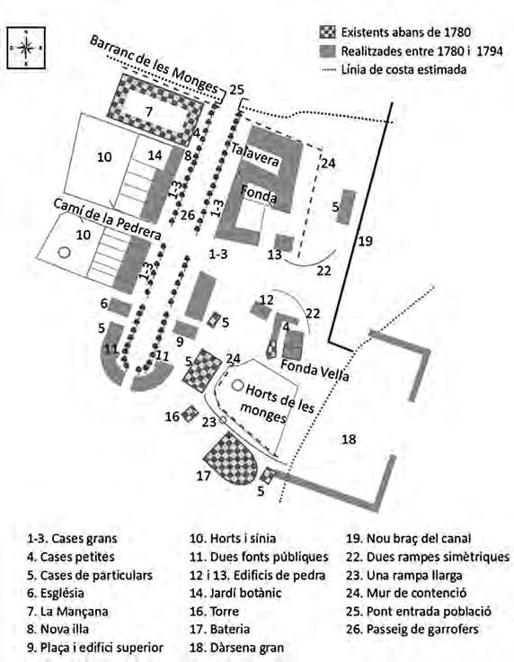

← Torna al pobleQUADERN DOCUMENTAL · REVISIÓ 08/11/2026
Una vila amb cases,
oficis i serveis.
La revisió desenvolupa 21 edificis i conjunts visibles a l’escena de 1800. Les formes arquitectòniques són restitucions C. Es conserven els emplaçaments, les plantes d’assaig i els estats d’obra.
Revisió del litoral · 08/11/2026: forn de guix i barraques recol·locats, Sanitat recolzada íntegrament al moll i posició del Molinet retirada fins a fixar el seu solar al canal vell.
Què vol dir el total de 119?
La relació del 20 de maig de 1794 compta 81 cases i habitacions reials i 38 registres privats mixtos. Les 24 habitacions de la Mançana comparteixen un edifici; les propietats privades també inclouen capella, fusteria, duana i dependències de servei. El total no és un recompte de 119 edificis residencials independents.
El mapa conserva les 81 unitats reials representades en 58 cossos d’estudi. El parcel·lari privat continua sense conciliar: no s’afegeixen 38 cases en solars suposats.
Canvis i suport documental
| Conjunt | Representació | Font | Certesa i límits |
|---|
ferreria-vella
ferreria-nova
guardes-rendes-1
guardes-rendes-2
casa-administrador
sanitat-antiga
cases-assentistes-1
cases-assentistes-2
forn-moli-guix | Façanes amb obertures reals, llindes, fusteries, reixes, ràfecs i coberta de teula; ferreria amb fogar, campana i enclusa. | H01 pp.159–162; N112 pp.211–212,224 i art.5 p.231; evidència individual conservada a urban-fabric.json | Ús documental; alçats i detall C. |
|---|
hostal-1748
capella-1748
cuartel-caballeria-1748
cuartel-infanteria-1748
cuartel-caballeria-1748-2
cuartel-caballeria-1748-3
cuartel-infanteria-1748-2
cuartel-infanteria-1748-3 | Cobertes inclinades adaptades als quatre vèrtexs de cada cos, portes i finestres. Cap canvi a la traça A–G. | N112 il·l.1 p.197; projecte de Miguel Marín, agost 1748, AGMM PL T-6/5; redibuix interpretatiu aportat | Traça i georeferenciació d’assaig conservades; cobertes i obertures C. |
|---|
quarters
old-inn
old-customs
health | Fonda Vella, duana, Sanitat i allotjament de servei amb façanes i cobertes desenvolupades, sense annexos nous. | N112 art.5,16,18 i anàlisi pp.211–212; H01; correspondència cadastral no resolta | Usos documentats; planta, emplaçament individual, alçat i permanència C. |
|---|
| manzana-shared | Portal passant, façanes del pati, forn al tram oposat al front i pati accessible. Es manté el pou existent i les 24 habitacions compartides. | Relació del 20/5/1794, art.7, transcrita a N112 p.231 | Usos i relacions documentats; portal, ubicació de cada cambra, forma del forn i detalls C. |
|---|
| tinglado | Cinc arcs d’obertura, dotze pilars al primer cos i nou al segon; estructura de fusta i cobertura parcial. | N112 pp.215,226; ACA RP BGRP Cajas 33, informe novembre de 1785–juliol de 1786 | Quantitats documentades; distribució, perfils i volum C. Desmuntatge sense data coneguda. |
|---|
| molinet | Model d’estudi de les dues moles conservat sense emplaçament al mapa; posició del braç nou retirada fins a georeferenciar el solar del canal vell. | Relació del 20/5/1794, art.30, N112 p.234 | Dues moles i obra pendent documentades; forma i situació del portal C. No es data la posada en servei. |
|---|
El pati anivellat i els graons grisos d’accés són suports tècnics reversibles sobre el MDT actual. No documenten un paviment, terraplè ni escala històrics.
Fonts per comprovar la lectura
Pilar Reverté Vidal, «1794. Estat de les obres reials de San Carlos», Recerca 20 (2024), pp. 191–234. Annex: relació de 20/5/1794, ACA RP BGRP Cajas 60. La descripció del Tinglado procedeix de l’anàlisi de l’informe de 1785–1786 (p. 215), i no d’un plànol mètric.

N112 il·lustració 4. Croquis de recerca de Reverté, no aixecament parcel·lari del 1794. És la base relacional de l’estudi existent.Allò que encara falta situar
La conciliació de les propietats privades, la Casa dels Bous de l’Horta Vella i el rajolar de la Rabosa necessiten testimonis que fixin el solar. Les fonts disponibles no permeten emplenar els espais buits amb cases atribuïdes al 1800.
Registre estructurat de la revisió · Explora els edificis